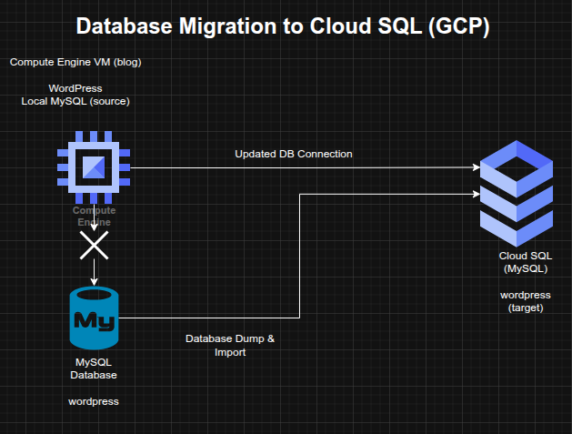

Database Migration and Application Reconfiguration using Google Cloud SQL
Database Migration and Application Reconfiguration using Google Cloud SQL
Timeline: December 2025
Role: Cloud Engineer / Cloud Architect
Skills: Google Cloud SQL, MySQL, Database Migration, WordPress, Compute Engine, Application Configuration, SQL Import/Export, Cloud Connectivity
Project Summary
This project focused on migrating a self-hosted MySQL database backing a WordPress application to Google Cloud SQL, then reconfiguring the application to use the managed database service instead of the local database running on the same server.
The implementation demonstrated a common cloud modernization pattern in which database services are separated from application hosts and moved to a managed platform to improve maintainability, scalability, and operational resilience.
Objectives
- Provision a managed MySQL database in Google Cloud SQL
- Create and configure the target database environment
- Export the existing WordPress database from the local host
- Import the database into Cloud SQL
- Reconfigure the WordPress application to use Cloud SQL
- Validate successful migration and application functionality
Architecture Overview
The architecture consisted of:
- A WordPress application running on a Compute Engine instance named
blog - A legacy local MySQL database originally hosted on the same server
- A new Google Cloud SQL MySQL instance provisioned in the target region
- A migrated
wordpressdatabase and corresponding user configuration - Updated WordPress database connection settings in
wp-config.php - Authorization and connectivity configuration allowing the blog instance to connect to Cloud SQL

Implementation & Highlights
1. Cloud SQL Provisioning
- Created a new Google Cloud SQL instance to host the migrated WordPress database
- Selected the required region and zone parameters for the deployment
- Prepared the managed database platform for application migration
2. Target Database Configuration
- Created and configured the required database inside the Cloud SQL instance
- Ensured the target environment was suitable for receiving the migrated WordPress data
3. Data Export and Import
- Performed a dump of the existing local MySQL
wordpressdatabase - Imported the exported data into the newly created Cloud SQL instance
- Migrated the application’s persistent data from the legacy database host to the managed service
4. Connectivity and Authorization
- Configured access so the
blogCompute Engine instance could connect to the Cloud SQL instance - Ensured the application host was authorized to reach the managed database service
5. Application Reconfiguration
- Updated the WordPress configuration file located at
/var/www/html/wordpress/wp-config.php - Replaced the old local database connection settings with the new Cloud SQL connection details
- Shifted the application away from dependence on the locally hosted MySQL service
6. Validation and Troubleshooting
- Verified that the WordPress blog continued to respond correctly after migration
- Confirmed that the application was using the Cloud SQL backend successfully
- Performed troubleshooting to ensure service continuity after the database cutover
Design Decisions
- Moved the database tier to Google Cloud SQL to separate application and database responsibilities
- Used database dump/import migration as a straightforward migration path for an existing MySQL-backed application
- Updated the application configuration rather than rebuilding the application stack
- Preserved service continuity by validating the blog after cutover to the managed database backend
Results & Impact
- Successfully migrated the WordPress database from local MySQL to Google Cloud SQL
- Reconfigured the application to use a managed cloud database service
- Demonstrated practical skills in:
- managed database provisioning
- MySQL export/import migration
- application configuration updates
- post-migration validation and troubleshooting
- Strengthened understanding of database modernization patterns for cloud-hosted applications
Tools & Technologies Used
- Google Cloud SQL – Managed MySQL database platform
- MySQL – Source database engine
- Compute Engine – Application host
- WordPress – Application workload
- SQL Dump / Import – Migration mechanism
- Application Configuration – Database endpoint cutover
Outcome
This project demonstrates the ability to migrate an application database from a self-managed environment to a managed cloud database platform while preserving application functionality. It highlights practical experience in database modernization, application reconfiguration, and migration validation, which are highly relevant to cloud engineering and cloud architecture roles.